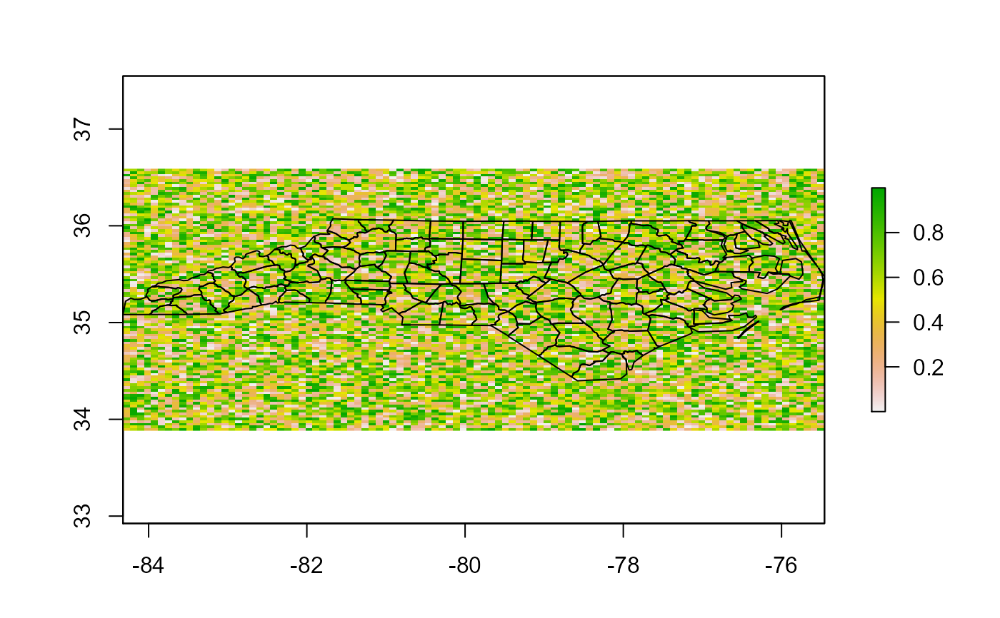
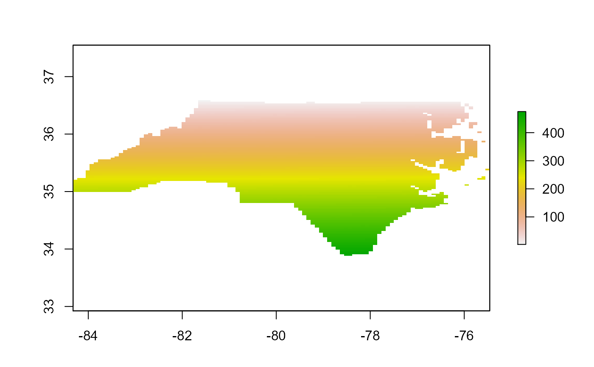

Fast method for extracting raster values to polygons
This method for raster extraction uses the raster cell indices and
is quite a bit faster with polygon data than other methods. This is
especially true with large raster stacks (eg., time-series). The cell
indices are returned using cellnumbers.
If ids argument is provided a column with values from the associate
column are included otherwise "row_names" is returned which corresponds
to the rownames in the source polygon object. Please note that if
use.terra = TRUE it will coerce to a terra class if not already. With
large data the coercion overhead may be worth it, providing speed gains.
If the raster is a terra SpatRaster it will operate in its native class.
The cells = TRUE argument will return the cell indices which could be
used at a later time.
polygon_extract( r, p, ids = NULL, cells = FALSE, asList = TRUE, use.terra = FALSE )
| r | RasterLayer, RasterStack, RasterBrick or SpatRaster object |
|---|---|
| p | sf polygon data |
| ids | A unique id field contained in p, will be assigned to output otherwise will return rownames |
| cells | FALSE | TRUE - Return cell index ids |
| asList | TRUE | FALSE - Output list object |
| use.terra | FALSE | TRUE - Use terra for extracting indices |
A list object containing a data.frame for each polygons raster values, as columns. Additional columns are "row_names" or which ever column is passed to the ids argument and "cells" if cells = TRUE. If asList = FALSE a data.frame will be returned
Jeffrey S. Evans <jeffrey_evans@tnc.org>
#> Reading layer `nc' from data source `C:\Users\rata\Documents\R\win-library\4.0\sf\shape\nc.shp' using driver `ESRI Shapefile' #> Simple feature collection with 100 features and 14 fields #> geometry type: MULTIPOLYGON #> dimension: XY #> bbox: xmin: -84.32385 ymin: 33.88199 xmax: -75.45698 ymax: 36.58965 #> geographic CRS: NAD27#> Warning: repeating attributes for all sub-geometries for which they may not be constant#### multi-band i=100; j=100 r <- do.call(raster::stack, replicate(20, raster::raster(matrix(runif(i*j), i, j)))) names(r) <- paste0("time", 1:nlayers(r)) extent(r) <- extent(nc) proj4string(r) <- st_crs(nc)$proj4string plot(r[[1]])( e <- polygon_extract(r, nc) )#> Error in polygon_extract(r, nc): please install tabularaster package before running this function( e <- polygon_extract(r, nc, ids="CNTY_ID") )#> Error in polygon_extract(r, nc, ids = "CNTY_ID"): please install tabularaster package before running this function#> Error in lapply(e, function(x) apply(x[, 2:ncol(x)], MARGIN = 1, FUN = mean)): object 'e' not found#### Single band mean ( e <- polygon_extract(r[[1]], nc, ids="CNTY_ID") )#> Error in polygon_extract(r[[1]], nc, ids = "CNTY_ID"): please install tabularaster package before running this function#> Error in lapply(e, function(x) mean(x[, 2], na.rm = TRUE)): object 'e' not found# \donttest{ # Leveraging cell ids, pulls values, calculates # new value, and assigns to source cell using # index from cells = TRUE e <- polygon_extract(r, nc, cells=TRUE)#> Error in polygon_extract(r, nc, cells = TRUE): please install tabularaster package before running this functione <- data.frame( cells=unlist(lapply(e, function(x) as.numeric(x[,22]))), means=unlist(lapply(e, function(x) apply(x[,2:22], MARGIN=1, FUN=mean))) )#> Error in lapply(e, function(x) as.numeric(x[, 22])): object 'e' not found# copy raster and assign NA's r2 <- r[[1]] r2[] <- rep(NA, ncell(r)) # assign using cell indices r2[e$cells] <- e$means#> Error in eval(expr, envir, enclos): object 'e' not found#> Error in polygon_extract(r, nc): please install tabularaster package before running this function#>#> user system elapsed #> 5.99 0.00 6.02# }